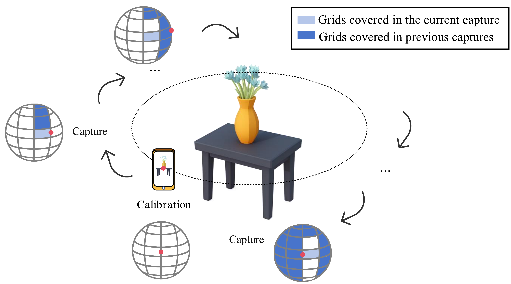

An Object-Centered Data Acquisition Method for 3D Gaussian Splatting using Mobile Phone
🔎
Overview
A mobile, object-centered capture workflow for 3D Gaussian Splatting (3DGS). After a one-time calibration, device orientations align to a baseline; the camera forward vector is indexed on a discretized spherical grid. Area-weighted coverage guides motion in real time to avoid polar bias, and a stability gate from smoothed IMU signals admits only steady frames. Images and poses are used for off-device 3DGS reconstruction.
🧭
Key Contributions
- IMU-based orientations mapped to an object-centered spherical coordinate system.
- Real-time, area-weighted coverage feedback for uniform and complete viewpoints.
- Dual-signal stability gate (linear acceleration + angular velocity, smoothed).
🧩
System Outline
- Calibration: record a baseline orientation; later poses are referenced relatively.
- Pose sensing: log quaternion orientation, linear acceleration, and angular velocity.
- Stability gating: exponential averages vs. thresholds over a holding window; discard unsteady frames.
- Spherical mapping: project the optical axis to lon–lat; quantize to grid indices and update online.
- Area-weighted coverage: accumulate by spherical surface area; light morphological refinements.
🧪
Experimental Setting
- Device: Redmi K70 Pro (angle logging & stability gating)
- Reconstruction: 3DGS on NVIDIA RTX 5090D
- Evaluation: tabletop objects for analysis and visualization
🎬
Demo & Figure
Method figure. A compact summary of our object-centered mobile capture loop:
a one-time calibration, real-time indexing of the camera forward vector on a discretized spherical grid,
area-weighted coverage feedback to guide motion uniformly, and a stability gate that filters
shaky frames via smoothed IMU signals. This mirrors the method section in the PDF and clarifies the inputs and
closed-loop feedback used for 3DGS reconstruction.

Two videos: the left video records the capture process with real-time coverage and stability indicators;
the right video shows the reconstruction result rendered from the collected images and poses.
Capture Process (screen recording)
Reconstruction Result (3DGS)
📦
Downloads
The release includes, but is not limited to, the following application builds:
- camera.apk — the main production version with all features described in the paper, including one-time calibration, area-weighted coverage feedback, and the stability gate based on smoothed acceleration and angular velocity.
- free_capture_test.apk — the experimental “free capture” version used in the experimental results, without the visualization grid, allowing unconstrained capture.
- no_stable_test.apk — a version without stability detection, designed for future work; results for this version are not included on this page.
🙏
Acknowledgements
We gratefully acknowledge 3DGS, on which this work is based. We also thank the Camera project, upon which our camera app modifications are built.